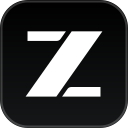

glm-zcode-2apiA local-native proxy: it runs on your own machine and talks to your ZCode plan directly — out of the box, credentials never leave it. Off-peak perks and plan entitlements included; models follow your plan.
把下面这段话复制后发给任何 AI 编码代理（OMP / Claude Code / Cursor 等），它会自动完成安装、启动与 OMP 接入：
请阅读 https://github.com/binggao1230/glm-zcode-2api/blob/main/AI_SETUP.md —— 这是 glm-zcode-2api 的自动安装与配置文档，glm-zcode-2api 是一个把本机 ZCode 订阅变成 OpenAI 兼容 API 的网关。请严格按文档执行：克隆并构建项目、启动网关、验证健康状态、把它接入 OMP（oh-my-pi），最后用 omp models zcode 和 omp --model zcode/glm-5.3-flash 验收，并逐步报告每一步的结果。过程中不得提交或打印任何真实凭据。
Copy the paragraph below into any AI coding agent (OMP / Claude Code / Cursor etc.) — it installs, starts and wires everything into OMP:
Read https://github.com/binggao1230/glm-zcode-2api/blob/main/AI_SETUP.md — it is the install & configuration doc for glm-zcode-2api, a gateway that turns a local ZCode plan into an OpenAI-compatible API. Follow it exactly: clone and build the project, start the gateway, verify its health, integrate it into OMP (oh-my-pi), then verify with omp models zcode and omp --model zcode/glm-5.3-flash, reporting each step's result along the way. Never commit or print real credentials.
前置条件：本机已登录 ZCode 桌面版 · Go ≥ 1.22（构建）· Python 3（启动器）
git clone https://github.com/binggao1230/glm-zcode-2api
cd glm-zcode-2api
CGO_ENABLED=0 go build -trimpath -ldflags="-s -w" -o bin/glm-zcode-2api ./cmd/server
# 读取 ZCode 配置、生成访问口令、后台常驻
python3 scripts/omp-gateway.py start
curl -s http://127.0.0.1:7864/healthz
# {"service":"glm-zcode-2api","healthy":true,...}
Prerequisites: ZCode desktop signed in · Go ≥ 1.22 (build) · Python 3 (launcher)
git clone https://github.com/binggao1230/glm-zcode-2api
cd glm-zcode-2api
CGO_ENABLED=0 go build -trimpath -ldflags="-s -w" -o bin/glm-zcode-2api ./cmd/server
# reads the ZCode config, mints the token, daemonizes
python3 scripts/omp-gateway.py start
curl -s http://127.0.0.1:7864/healthz
# {"service":"glm-zcode-2api","healthy":true,...}
KEY=$(python3 scripts/omp-gateway.py token)
curl -sN http://127.0.0.1:7864/v1/chat/completions \
-H "Authorization: Bearer $KEY" -H "Content-Type: application/json" \
-d '{"model":"<套餐内模型>","messages":[{"role":"user","content":"hi"}],"stream":true}'
data: {"choices":[{"delta":{"reasoning_content":"…"}}]}
data: {"choices":[{"delta":{"content":"你好！"}}]}
data: {"choices":[{"delta":{},"finish_reason":"stop"}]}
data: [DONE]
KEY=$(python3 scripts/omp-gateway.py token)
curl -sN http://127.0.0.1:7864/v1/chat/completions \
-H "Authorization: Bearer $KEY" -H "Content-Type: application/json" \
-d '{"model":"<a model from your plan>","messages":[{"role":"user","content":"hi"}],"stream":true}'
data: {"choices":[{"delta":{"reasoning_content":"…"}}]}
data: {"choices":[{"delta":{"content":"Hi there!"}}]}
data: {"choices":[{"delta":{},"finish_reason":"stop"}]}
data: [DONE]
# ~/.omp/agent/models.yml
zcode:
baseUrl: http://127.0.0.1:7864/v1
api: openai-completions
apiKey: '!/usr/bin/python3 ~/projects/glm-zcode-2api/scripts/omp-gateway.py token'
authHeader: true
compat:
supportsStore: false
supportsDeveloperRole: false
maxTokensField: max_tokens
models:
# 模型以套餐实际提供为准，按需增删
- id: glm-5.3
name: ZCode / GLM-5.3
reasoning: true
input: [text]
contextWindow: 1000000
maxTokens: 128000
apiKey 指向取口令命令而非固定密钥——OMP 解析该 provider 时若网关未运行会自动拉起（≤2s），无需常驻。
# ~/.omp/agent/models.yml
zcode:
baseUrl: http://127.0.0.1:7864/v1
api: openai-completions
apiKey: '!/usr/bin/python3 ~/projects/glm-zcode-2api/scripts/omp-gateway.py token'
authHeader: true
compat:
supportsStore: false
supportsDeveloperRole: false
maxTokensField: max_tokens
models:
# list the models your plan actually provides
- id: glm-5.3
name: ZCode / GLM-5.3
reasoning: true
input: [text]
contextWindow: 1000000
maxTokens: 128000
apiKey points at the token-printing command, not a fixed secret — OMP starts the gateway on demand (≤2s) when resolving this provider; no daemon required.
python3 scripts/omp-gateway.py status # 运行状态 + health python3 scripts/omp-gateway.py restart # 重新登录 ZCode / 切换套餐后同步 python3 scripts/omp-gateway.py stop python3 scripts/omp-gateway.py token # 打印访问口令
python3 scripts/omp-gateway.py status # runtime status + health python3 scripts/omp-gateway.py restart # after re-logging into ZCode python3 scripts/omp-gateway.py stop python3 scripts/omp-gateway.py token # print the access token
GLM Coding Plan 按积分计费，非高峰时段（含周末全天）调用只消耗 50% 标准积分。这类权益按客户端归因判定——网关的 mimic_client 模式（启动器默认开启）把 ZCode 的归因头与账号 ID 原样带给上游，代理流量与 App 内流量同等对待：
The GLM Coding Plan is credit-based: off-peak calls (weekends included) consume only 50% of standard credits. These perks are decided by client attribution — with mimic_client (enabled by the launcher by default), the gateway mirrors ZCode's attribution headers and account ID, so proxied traffic gets the same treatment:
版本号自动读取 ZCode.app，账号 ID 自动从套餐 JWT 解出，时区默认探测本机、可用 upstream.client_timezone 指定。
The version is read from ZCode.app's Info.plist, the account ID is decoded from the plan JWT, and the timezone is detected from the host by default (override with upstream.client_timezone).